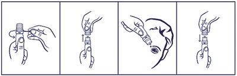

|
 |
| СИГИДА ДУО (SIGIDA DUO) diphenhydramine, naphazoline капли глазные | ||||||||
|
Клинико-фармакологическая группа: Препарат с противоаллергическим и сосудосуживающим действием для местного применения в офтальмологии Номер и дата регистрации: ЛП-004396 от 01.08.17 Код ATX: S01GA51 |
Владелец регистрационного удостоверения: зарегистрировано и произведено Представительство: | |||||||
Форма выпуска, состав и упаковка Капли глазные в виде прозрачного, бесцветного или слегка желтоватого цвета раствора.
Вспомогательные вещества: борная кислота - 16 мг, макрогол 300 - 1.125 мг, натрия гиалуронат - 1 мг, динатрия эдетата дигидрат (трилон Б) - 0.5 мг, 1М раствор натрия гидроксида или 0.1М раствор азотной кислоты - до рН 4.0-7.0, вода д/и - до 1 мл. 10 мл - флаконы пластмассовые (1) с капельным дозатором - пачки картонные. | ||||||||
| ||||||||
Описание препарата основано на официально утвержденной инструкции по применению и утверждено компанией-производителем для издания 2022 г. | ||||||||
Фармакологическое действие |
Фармакокинетика |
Показания |
Режим дозирования |
Побочное действие |
Противопоказания |
Беременность и лактация |
Особые указания |
Передозировка |
Лекарственное взаимодействие |
Условия хранения и сроки годности |
Условия реализации
Фармакологическое действие
Комбинированный препарат, обладающий антигистаминным (дифенгидрамин) и вазоконстрикторным (нафазолин) действием. Дифенгидрамин является антагонистом гистаминовых H1-рецепторов. Путем конкурентной блокады гистаминовых H1-рецепторов снижает аллергические симптомы, особенно связанные с высвобождением гистамина, такие как увеличение проницаемости и расширение сосудов. Нафазолин стимулирует α-адренорецепторы сосудов; местное применение нафазолина приводит к сужению расширенных сосудов и уменьшению симптомов воспалительного состояния. Полный местный эффект нафазолина проявляется уже через 5 мин с момента применения. Действие продолжается 6-8 ч. Фармакокинетика
Нафазолин может всасываться со слизистых оболочек, вызывая системные эффекты, хотя такое действие у взрослых после введения препарата в конъюнктивальный мешок является маловероятным. Системные реакции наступают, главным образом, у пациентов пожилого возраста и у детей младшего возраста. Проявление системного действия дифенгидрамина маловероятно. Показания
Режим дозирования
Препарат применяют местно, в конъюнктивальный мешок. Взрослым и детям старше 6 лет назначают по 1-2 капли при необходимости каждые 6-8 ч. Препарат не следует применять дольше 3-5 дней. Порядок работы с флаконом, укомплектованным капельным дозатором  1. Удалить предохранительное кольцо перед первым использованием флакона. 2. Осторожно снять колпачок с флакона. Не касаясь дозатора, перевернуть флакон дозатором вниз, зафиксировав между большим и указательным пальцами. Перед началом использования рекомендуется прокачать дозатор до появления первой капли препарата путем нескольких нажатий указательным пальцем сверху на флакон. 3. Запрокинуть голову назад, расположить дозатор флакона над глазом и указательным пальцем одной руки оттянуть нижнее веко вниз. Слегка надавить на флакон и закапать необходимое количество раствора в конъюнктивальный мешок глаза. Избегать контакта наконечника открытого флакона с поверхностью глаза и руками. 4. После использования надеть колпачок на флакон. После вскрытия флакона препарат можно использовать в течение всего срока годности. По истечении этого срока препарат следует уничтожить. При видимых повреждениях флакона применять препарат не следует. Побочное действие
Возможно: жжение, зуд, гиперемия, раздражение конъюнктивы, боль в глазах, расстройство зрения, сухость слизистой оболочки полости носа, мидриаз, повышение внутриглазного давления. Описан единичный случай помутнения роговицы (при применении в течение 7 дней не менее 10 раз/сут), которое исчезло после прекращения лечения. Длительное применение может вести к местным изменениям эпителия, связанным с гипоксией (ухудшающий прогноз). Противопоказания
Применение при беременности и кормлении грудью
Во время беременности применение препарата не рекомендуется. При необходимости применения препарата в период лактации грудное вскармливание рекомендуется прекратить. Особые указания
Препарат предназначен только для местного применения: инстилляция в конъюнктивальный мешок. Не следует применять капли в случае затяжного конъюнктивита, их можно применять в течение короткого времени при обострении хронического заболевания. Системное действие компонентов препарата после введения в конъюнктивальный мешок маловероятно, однако его следует с осторожностью применять у пациентов с гипертензией, аритмией; атеросклерозом, хроническим ринитом, бронхиальной астмой, с гиперчувствительностью к симпатомиметическим аминам, при гипертиреозе, а также при гиперплазии предстательной железы и в пожилом возрасте. Этих пациентов следует предупредить о том, что в случае появления каких-либо системных реакций, указывающих на всасывание нафазолина, необходимо прекратить применение препарата. Не рекомендуется применять препарат у новорожденных и у детей до 6 лет ввиду возможного появления потенциально опасных побочных действий. Пациента следует предупредить, что сохранение симптомов раздражения или боль в глазах в течение более 72 ч является показанием к отмене препарата. Противопоказано применение препарата более 5 дней или с интервалом менее 3 ч, ввиду риска развития синдрома, ведущего к вторичному усилению отека и гиперсекреции, а также возможности развития стойких изменений эпителия. Влияние на способность к управлению транспортными средствами и механизмами Ввиду возможного расстройства зрения следует с осторожностью применять у лиц, управляющих транспортными средствами и обслуживающих механизмы. Передозировка
Симптомы: продолжительное или слишком частое применение у детей в возрасте до 6 лет может привести к угнетению ЦНС, гипотермии (понижение температуры тела), длительному мидриазу, повышению АД, тахикардии, коме. Лечение: симптоматическое. Лекарственное взаимодействие
Применение препарата, содержащего нафазолин, одновременно с приемом трициклических антидепрессантов может потенцировать сосудосуживающее действие нафазолина. Одновременное применение нафазолина с ингибиторами МАО может привести к развитию гипертонического криза. |
||||||||
Вернуться наверх |
||||||||
Copyright © Справочник Видаль «Лекарственные препараты в России», Москва, Россия